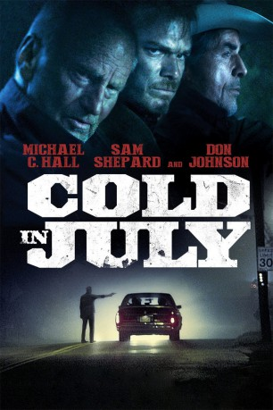

#454 Cold in July
 
 IMDB-Wertung: 6.8 / 10
IMDB-Wertung: 6.8 / 10  Metascore: 73
Metascore: 73 
Texas in den 1980er Jahren. Das friedliche Leben des Ehepaars Richard und Ann Dane ändert sich schlagartig, als Richard eines Nachts einen Einbrecher aus Notwehr tötet. Danach wird der Familienvater nicht nur von Schuldgef��hlen geplagt, sondern auch mit Russel, dem Vater des Getöteten, konfrontiert. Dieser entpuppt sich als gewaltverherrlichender Ex-Sträfling und sinnt auf Rache, die sich in einer alttestamentarischen Auffassung von Gerechtigkeit zu äußern droht. Um seinen eigenen Sohn zu beschützen, tut sich Richard deshalb mit dem eigenwilligen Gesetzeshüter Jim Bob Luke zusammen. Als sich herausstellt, dass Russel jedoch gar nicht der Vater des Verstorbenen ist, wittert Richard ein Komplott und versucht, die dunkle Wahrheit ans Licht zu bringen.
Jahr: 2014
Dauer: 109 Minuten
FSK: 18
Land: USA Studio: IFC FilmsTonspuren: DD5.1 - ,
Untertitel: Englisch,
Auflösung: 1080p (1920x800) Größe: 11161 MB
Genre: Krimi, Thriller
Regisseur: Jim Mickle
Drehbuch: Nick Damici, Jim Mickle, Joe R. Lansdale
Soundtrack: Jeff Grace
Darsteller:
 Vinessa Shaw als Ann
Vinessa Shaw als Ann Michael C. Hall als Dane
Michael C. Hall als Dane- Ken Holmes als Burglar
 Nick Damici als Price
Nick Damici als Price- Brogan Hall als Jordan
- Rachel Zeiger-Haag als Valerie
- Kristin Griffith als Kay
 Happy Anderson als Ted
Happy Anderson als Ted Sam Shepard als Russel
Sam Shepard als Russel- Kris Eivers als Detective
- Joseph Harrell als Officer Kevin
 Joe Lanza als Officer #1
Joe Lanza als Officer #1- Soraya Butler als Female Officer
 Wyatt Russell als Freddy
Wyatt Russell als Freddy Don Johnson als Jim Bob
Don Johnson als Jim Bob- Tim Lajcik als Mex
 Bill Sage als Baseball Announcer
Bill Sage als Baseball Announcer- Joseph K. Bevilacqua als Coroner , uncredited
- Ralph Cashen als Depressed Old Man , uncredited
- Heidi K. Eklund als (uncredited
 Rosemary Howard als Frame Shop Pedestrian , uncredited
Rosemary Howard als Frame Shop Pedestrian , uncredited- Zoe Hunter als Teacher , uncredited
 Joseph Anthony Jerez als Big Man , uncredited
Joseph Anthony Jerez als Big Man , uncredited- Linda Kutrubes als (uncredited
- Steven Patrick O'Connor als Man at Lunch Counter , uncredited
- Lily Autumn Page als (uncredited
- Heidi Philipsen als mom at Mexican Restaurant , uncredited
 Wayne Pyle als (uncredited
Wayne Pyle als (uncredited Laurent Rejto als Perp , uncredited
Laurent Rejto als Perp , uncredited Bettina Skye als (uncredited
Bettina Skye als (uncredited- Dorothea Swiac als Waitress , uncredited
 Lanny Flaherty als Jack Crow
Lanny Flaherty als Jack Crow- Brianda Agramonte als Young Latina Girl on Tape
- Gregory Russell Cook als Skinny Man
- Bitsy als Yappy Dog
 Lorenzo Beronilla als (uncredited
Lorenzo Beronilla als (uncredited- Julie E. Davis als Girl at Drive-In , uncredited
- Emery Kalinov als Child of Tired Single Mother , uncredited
- Vivian Kalinov als Mother with Infant , uncredited
- Maximilian Amadeus Meisner als boy at Mexican Restaurant , uncredited
- Sophie Elise Meissner als girl at Mexican Restaurant , uncredited
- Willoughby Pyle als (uncredited
- Casey Roberts als (uncredited
- Dannielle Rose als School Teacher , uncredited
- Robert Burke Warren als (uncredited
Datei: X:\FSK18-2014\Cold in July (2014, FSK18, 1920x800).mkv seit 25.02.2015
Festplatte: FSK18
 Es gibt insgesamt 27 Filme in der Gruppe 'FSK18-2014'
Es gibt insgesamt 27 Filme in der Gruppe 'FSK18-2014'